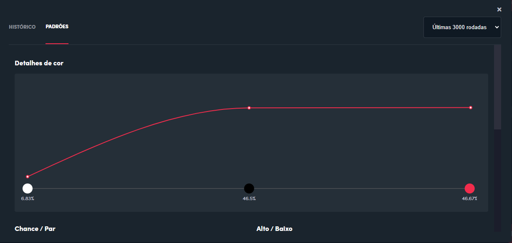

# Cria a roleta do jogo Double
double <- c(rep('v', 7), rep('p', 7), 'b')
double
# Sorteia 3.000 vezes
qtd_sorteio <- 3000
sorteio <- sample(double, qtd_sorteio, replace = TRUE)
sorteio
# Calcula a proporção para cada cor
mean(sorteio == 'v')
mean(sorteio == 'p')
mean(sorteio == 'b')
cores <- c('vermelho', 'preto', 'branco')
proporcao <- c(mean(sorteio == 'v'), mean(sorteio == 'p'), mean(sorteio == 'b'))
# Cria uma tabela com as proporções
tabela <- data.frame(cores, proporcao)
O site de apostas e cassino online Blaze não manipula seus jogos. Pelo menos, não o jogo Double. Essa é a tese que tentarei defender nesse texto. Isso significa que a empresa é honesta? Não. Nesse sentido não posso supor nada. De qualquer forma, sendo honesta ou não, manipulando ou não, pretendo deixar claro que apostar em cassino — mais especificamente no jogo Double — definitivamente não é uma fonte de renda extra.
O que é a Blaze?
A Blaze é uma plataforma de apostas que ficou muito conhecida no Brasil. Com um investimento massivo em marketing, que vai do patrocínio master do Santos Futebol Clube à publicidade nas redes de grandes influenciadores digitais como Neymar e Felipe Neto, a empresa conquistou uma imensa quantidade de apostadores e polêmicas. Apesar de sua atividade ser proibida no Brasil, a Blaze atua ilegalmente por meio da internet, com sede em Curaçao, uma pequena ilha no Caribe.
O que é o jogo Double?
O jogo funciona como uma espécie de roleta, na qual existem sete números vermelhos (de 1 a 7), sete números pretos (de 8 a 14) e um número branco (o zero). Para jogar, você deve apostar uma quantia x na cor que você acredita que será sorteada. Caso erre, você perde o valor apostado. Caso você aposte no preto ou no vermelho e acerte, você recebe 2x, duas vezes o valor que apostou. Caso você tenha acertado no branco, você recebe 14x.
Vamos usar um exemplo para que fique mais claro. Você, sensitivo, decide apostar 10 reais no vermelho, porque seu signo é Gêmeos, e geminianos são sanguíneos. Deu vermelho, é claro. Você recebe 20 reais — os 10 reais que você apostou mais 10 reais de lucro. Caso tivesse saído preto ou branco, você perderia a sua aposta. Acontece. Na próxima rodada é só acertar a cor e então você recuperará o que foi perdido e estará pronto para começar a lucrar. Nada mal.
O jogo é manipulado?
A resposta é simples: não sabemos. O que podemos fazer é analisar os dados fornecidos pelo site. Lá existe um histórico com mais de 800 páginas contendo 100 resultados cada. São mais de 80.000 resultados com a data e o horário em que foram sorteados. Há também um gráfico que mostra a proporção das últimas 3.000 rodadas, como na imagem abaixo. Pode-se argumentar que esses dados são falsos, mas isso é pouco provável.

Então o jogo é honesto?
Se honesto, neste caso, significa que o jogo é realmente aleatório, ou seja, não há manipulação, é o que vamos verificar. Até o momento da produção deste texto, toda a explicação sobre o jogo é a que está descrita acima. Diante disso, vamos supor que está implícito que cada um dos quinze números (de 0 a 14) tem probabilidade igual de ser sorteado. Como são sete vermelhos, sete pretos e um branco, as probabilidades para cada uma das cores são:
Vermelho: 7/15 (46,66% aproximadamente)
Preto: 7/15 (46,66% aproximadamente)
Branco: 1/15 (6,66% aproximadamente)
Isso é o que esperamos para um jogo realmente aleatório, e pelo gráfico podemos notar que a proporção está bem próxima disso. Então, nesse sentido, ponto a favor da honestidade.
Além disso, caso o jogo não fosse aleatório, no sentido de existir algum algoritmo para fraudar os resultados, o padrão do jogo poderia ser descoberto por meio de uma análise de dados. Poderíamos coletar os resultados do jogo por meio de Web Scraping e utilizar ferramentas como o R para analisá-los.
Não vamos discutir aqui como um computador gera resultados aleatórios. Esse assunto ficará para um texto futuro. Não podemos negar também que um ou outro resultado específico possa ser adulterado. No entanto, os pontos levantados até aqui nos permitem dizer que é muito improvável que o Double seja manipulado.
Por outro lado, se honesto significa que o jogador tem chance de se dar bem no jogo, então não. O jogo não é honesto. E basta que ele seja aleatório. Para provar isso, vamos usar o conceito de esperança matemática, ou valor esperado.
O que é esperança?
Esperança é o valor médio que se espera que uma variável aleatória assuma quando o experimento aleatório é repetido um número significativamente grande de vezes. A variável aleatória tem esse nome porque cada um dos valores que ela pode assumir está associado a uma probabilidade.
Exemplo: Vamos chamar de D a variável aleatória que representa a quantidade em dinheiro de uma aposta feita nesse jogo. Vamos supor que o jogador irá apostar 10 reais na cor vermelha. A variável D pode assumir os valores 10 (lucro de 10 reais), caso o resultado do experimento aleatório seja a cor vermelha; ou -10, caso o resultado seja ou preto ou branco.
A fórmula da esperança é o somatório de cada valor da variável aleatória multiplicado pela sua probabilidade. Assim, se a variável \(D\) assume os valores \(d_1\), \(d_2\),…,\(d_n\) e estes valores acontecem com probabilidades \(p(d_1) = P(D = d_1)\), \(p(d_2) = P(D = d_2)\), …, \(p(d_n) = P(D = d_n)\), então a esperança de \(D\) será:
\[ E[D] = \sum_{i=1}^n d_ip(d_i) \]
Usando as probabilidades e os valores possíveis da variável \(D\), calculamos a sua esperança:
\[E[D] = 10 \times (7/15) + (-10) x (7/15) + (-10) \times (1/15) = -10/15.\]
Logo, \(E[D]\) é aproximadamente -0,67. Ou seja, para cada aposta de 10 reais na cor vermelha (ou na preta) espera-se que você perca, em média, 67 centavos. “E se eu jogar na cor branca?”, você pode estar pensando. Façamos as contas. A variável \(D\) agora pode assumir outros valores: -10, se sair vermelho, -10 se sair preto e 130 se sair branco (140 menos 10 da aposta):
\[E[D] = (-10) \times (7/15) + (-10) \times (7/15) + 130 \times (1/15) = -10/15\]
\(E[D]\) é aproximadamente -0,67; o mesmo resultado.
Vamos simular na linguagem R
Primeiro vamos criar um vetor que representa 7 vermelhos, 7 pretos e 1 branco. Depois, vamos sortear um dos seus valores 3.000 vezes.
Vamos criar um gráfico para as proporções obtidas nesta simulação:
# Carrega o pacote ggplot.
library(ggplot2)
## Gera o gráfico de barras para a proporção de cada cor
ggplot(tabela, aes(x=cores, y=proporcao, fill=cores)) +
coord_cartesian(ylim=c(0,1)) +
geom_col() +
scale_fill_manual(values = c("#FFFFFF", "#000000", "#FF0000"), guide = "none") +
geom_text(aes(label=sprintf("%0.4f", proporcao)), size = 5,
colour = c("#000000", "#000000", "#000000"), nudge_y = 0.05) +
labs(x = NULL, y = NULL, title = "Proporção das cores sorteadas", colours = NULL) +
theme_light() +
theme(panel.background=element_rect(fill = "#DCDCDC"))Podemos notar que a proporção simulada é muito próxima da proporção calculada anteriormente e da proporção da Blaze. Agora vamos simular os resultados para três jogadores que apostam 10 reais, cada um em uma mesma cor, em todas as rodadas.
valor_aposta <- 10
apostas_vermelho <- c(rep('v', qtd_sorteio))
apostas_preto <- c(rep('p', qtd_sorteio))
apostas_branco <- c(rep('b', qtd_sorteio))
resultados_vermelho <- c()
resultados_preto <- c()
resultados_branco <- c()
montante_vermelho <- 10
montante_preto <- 10
montante_branco <- 10
historico_vermelho <- c()
historico_preto <- c()
historico_branco <- c()
for(i in 1:length(sorteio)) {
if(sorteio[i] == 'v') {
resultados_vermelho[i] <- +(valor_aposta)
resultados_preto[i] <- -(valor_aposta)
resultados_branco[i] <- -(valor_aposta)
montante_vermelho <- montante_vermelho + (valor_aposta)
montante_preto <- montante_preto - (valor_aposta)
montante_branco <- montante_branco - (valor_aposta)
}
else if (sorteio[i] == 'p') {
resultados_vermelho[i] <- -(valor_aposta)
resultados_preto[i] <- +(valor_aposta)
resultados_branco[i] <- -(valor_aposta)
montante_vermelho <- montante_vermelho - (valor_aposta)
montante_preto <- montante_preto + (valor_aposta)
montante_branco <- montante_branco - (valor_aposta)
}
else if (sorteio[i] == 'b') {
resultados_vermelho[i] <- -(valor_aposta)
resultados_preto[i] <- -(valor_aposta)
resultados_branco[i] <- +(13 * valor_aposta)
montante_vermelho <- montante_vermelho - (valor_aposta)
montante_preto <- montante_preto - (valor_aposta)
montante_branco <- montante_branco + (13 * valor_aposta)
}
historico_vermelho[i] <- montante_vermelho
historico_preto[i] <- montante_preto
historico_branco[i] <- montante_branco
}
rodada <- seq(1:qtd_sorteio)
cria_dataframe <- function(rod, hist, cor_nome) {
rodada <- seq(1:rod)
historico <- hist
cor <- cor_nome
df <- data.frame(rodada, historico, cor)
df
}
df_vermelho <- cria_dataframe(qtd_sorteio, historico_vermelho, 'vermelho')
df_preto <- cria_dataframe(qtd_sorteio, historico_preto, 'preto')
df_branco <- cria_dataframe(qtd_sorteio, historico_branco, 'branco')
df_historico <- rbind(df_vermelho, df_preto, df_branco)Vamos agora criar um gráfico para analisar o saldo dos jogadores após as 3000 rodadas. A linha azul representa 0 reais. Acima dela, o jogador tem lucro; abaixo, prejuízo.
ggplot(df_historico, aes(x=rodada, y=historico, color=cor)) +
geom_line(linewidth = 1.5) +
scale_color_manual(values = c("#FFFFFF", "#000000", "#FF0000"), guide="none") +
coord_cartesian(xlim=c(0,max(rodada)+40)) +
geom_text(data = subset(df_historico, rodada == 3000), aes(label=historico, fontface="bold"),
nudge_x = 85, size = 5) +
geom_hline(yintercept = 0, colour = "blue", linewidth = 1.5) +
labs(x=NULL, y=NULL, title="Saldo após cada rodada", subtitle="Aposta de 10 reais") +
theme_light() +
theme(panel.background=element_rect(fill = "gray"))Em todos os três resultados, notamos que o resultado é prejuízo. Em alguns momentos o jogador que apostou no branco teve lucro, mas por poucas rodadas e depois de sofrer uma perda de mais de 2500 reais. Essa alta variabilidade da aposta na cor branca se deve ao conceito de variância, assunto que abordaremos em um artigo futuro.
Por outro lado, para as três cores, a esperança — já calculada acima — nos mostra que em média espera-se um prejuízo de 0,67 para cada 10 reais de aposta. Portanto, em 3000 rodadas, o esperado é que o jogador perca 0,67 x 3000 = 2000 reais, resultado relativamente próximo do que foi simulado.
Conclusões
É improvável que o jogo Double seja manipulado. No entanto, como provado pelos cálculos e pelas simulações, não vale a pena jogar. Sim, você pode ganhar duas, três, dez ou até cem vezes, o que pode gerar uma sensação positiva de que o jogo vale a pena. Mas só poderemos dizer que deu certo, ou deu lucro, quando você parar de jogar. Porém, caso esteja ganhando, por que você pararia de jogar? E, no longo prazo, o esperado é que você perca. Não tem como dar certo.
De qualquer forma, acredito que está provado que esse tipo de aposta não é, em nenhuma hipótese, uma fonte de renda extra. Agora, se você está pensando em colocar um dinheiro apenas para brincar, recomendamos que não faça isso. Os jogos de azar têm um caráter viciante e já são considerados um problema de saúde pública. Não aposte sua saúde financeira e mental.